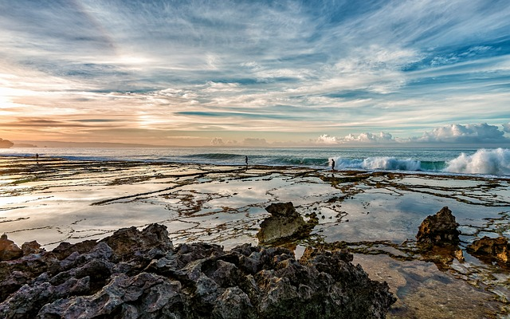
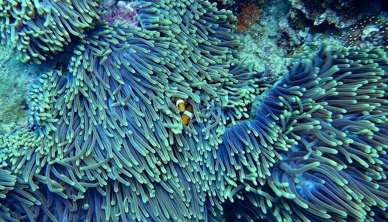
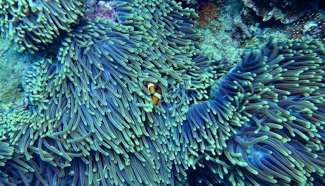
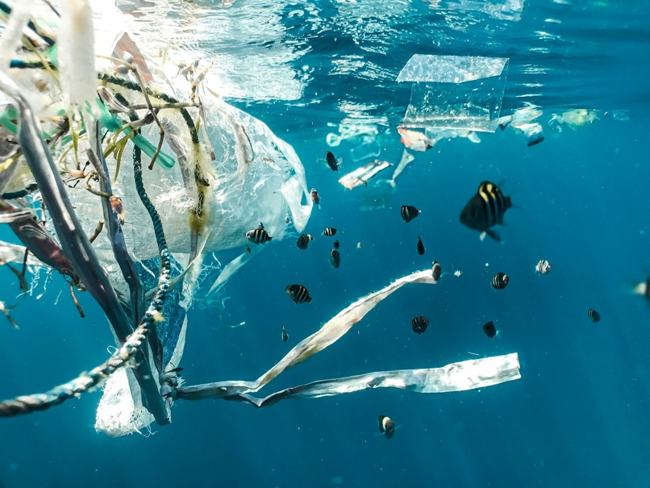

How TideTurners is Restoring Our Oceans and Beaches
Our Future Our oceans are in trouble. Every year, more than 11 million tons of plastic waste pour into the sea — a relentless flood of pollution that threatens marine life, damages fragile ecosystems, and even makes its way into the seafood we eat. But plastic pollution doesn’t stop at the coasts. A study found microplastics on 73% of beaches along Lake Michigan, showing that even our freshwater lakes aren’t immune to the plastic crisis. The consequences extend far beyond the water. One shocking estimate indicates that the average person consumes about a credit card’s worth of plastic every week — tiny particles found in our food, water, and air. This is no longer just an environmental issue — it’s a human health emergency. At TideTurners, we believe every ripple of action can build into a powerful wave of change. Our mission is to clean our oceans, intercept plastic waste at the source, and inspire a global movement to protect the waters that sustain life on Earth. Cleanup with Purpose Plastic pollution doesn’t just appear in the ocean — it starts on land.
Donate NowTogether One Pound at a time
 

Cleaning Oceans, Stopping Plastic, Inspiring Change
Cleanup with Purpose Plastic pollution doesn’t just appear in the ocean — it starts on land. That’s why TideTurners’ cleanup efforts don’t stop at the beach. We focus on intercepting plastic before it reaches the sea, using advanced technology, community partnerships, and innovative cleanup systems to collect and remove plastic from rivers, canals, and coastal areas. Our cleanup teams work where pollution flows the fastest, deploying tools like floating barriers, plastic traps, and even drones to locate and capture waste. Every piece of plastic we collect is sorted, analyzed, and responsibly processed, helping us understand where it comes from and how to stop it at its source. Prevention at the Source While cleanups are critical, they only address part of the problem. To truly turn the tide on ocean pollution, we need to stop plastic waste before it starts. That’s why TideTurners works closely with businesses, policymakers, and communities to develop smarter packaging, promote reusable alternatives, and advocate for policies that reduce single-use plastics. Education is also at the heart of prevention. From classrooms to boardrooms, we empower people with knowledge about how their everyday choices impact the ocean — and their own health. By making sustainability accessible, practical, and inspiring, we’re helping individuals and businesses make better choices that protect our waterways, oceans, and even our own bodies. Powered by Science and Community Our work is guided by science and fueled by people.
 Donate Today
Cleaning Oceans, Stopping Plastic, Inspiring Change
We collaborate with marine scientists, engineers, and environmental experts to ensure our methods are effective and backed by data. From tracking plastic flows through watersheds to identifying pollution hotspots, we combine cutting-edge research with on-the-ground action. But science alone isn’t enough — real change happens when people come together. That’s why we actively engage local communities in every project we launch. Whether through organized cleanups, educational workshops, or partnerships with grassroots organizations, we ensure our efforts create jobs, support local economies, and foster environmental stewardship. From Problem to Possibility It’s easy to feel overwhelmed by the scale of plastic pollution — but every piece removed, every policy improved, and every person inspired is a step toward cleaner waters. TideTurners isn’t just cleaning up; we’re building a global movement for ocean and freshwater health, turning one-time cleanups into long-term solutions. The plastic crisis touches all of us — from remote beaches to urban lakeshores, from the seafood on our plates to the water in our taps. Whether you’re a concerned citizen, a business leader looking to make a difference, or a policymaker ready to take action, there’s a place for you in this movement. Together, we can turn off the plastic tap, restore our oceans, and protect the incredible life — and future — that depends on healthy water. One tide at a time, we’re creating a cleaner, safer world for all. Join us. Let’s turn the tide on plastic pollution — together.
Donate Today